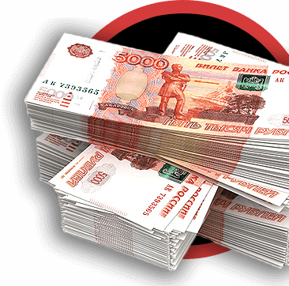
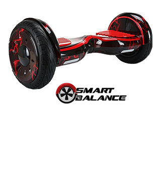

До старта осталось
Детский кибер-лагерь Место, где игровой мир
выходит за пределы кибер-пространства
Для родителей
Как это будет

ПРИЗОВОЙ ФОНД
1.2 млн рублей

Каждый участник команды победителя получит 10-ти дюймовый гироскутерSmart Balance
-
Занимайся любимым делом
Участники турнира пройдут путь от формирования команд и тренировочных игр до рейтинговых матчей и сражения за победу в чемпионате.
-
Общайся с друзьями
CyberCamp — это место, где можно найти новых друзей со всей России, в компании которых жизнь в лагере станет незабываемым событием.
-
Достигай успехов
Тренировки с командой, мастер-классы от опытных игроков, освещение в медиа — возможность сделать первые шаги в киберспорте..
Что такое CyberCamp?
CyberCamp — это первый и единственный в России детский лагерь, полностью посвященный Dota 2. Этим летом на черноморском побережье краснодарского края 600 участников, 120 команд, 4 фракции будут сражаться за победу в турнире под названием Dota Camp Junior League, являющимся первым юниорским life-турниром такого масштаба. Твоя команда ждет тебя! CyberCamp — это 2 недели насыщенной жизни на побережье, много новых друзей и незабываемых эмоций. Мастер-классы от профессиональных игроков. Освещение турнира на портале CyberCamp, а так же в Dota-стримах и блогах. Ценные призы и атрибутика для всех участников DCJL. Лучших игроков смен ждет награда, Iphone 7. Принять участие в турнире может любой желающий, в возрасте от 10 до 17 лет. CyberCamp — это уникальная возможность сделать свои первые шаги в проф. киберспорте, повысить свой скил и пообщаться с профессионалами доты. Геймерам, уже достигшим определенного уровня мастерства, предоставится шанс стать капитаном своей команды, привести ее к победе и всерьез заявить о себе!